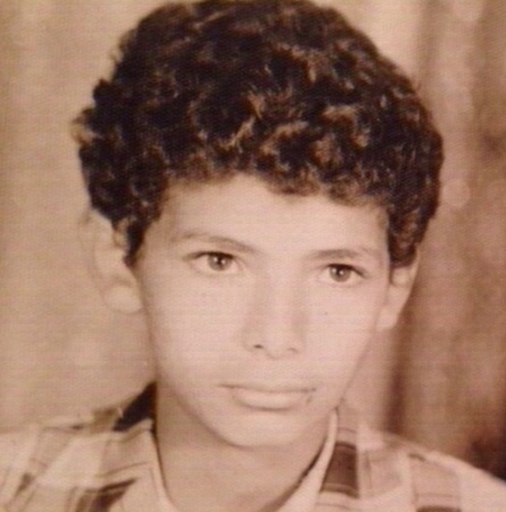
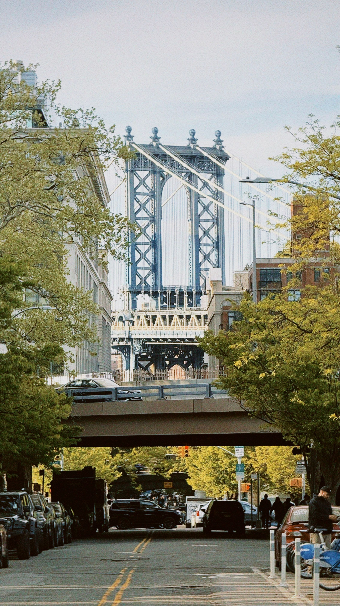
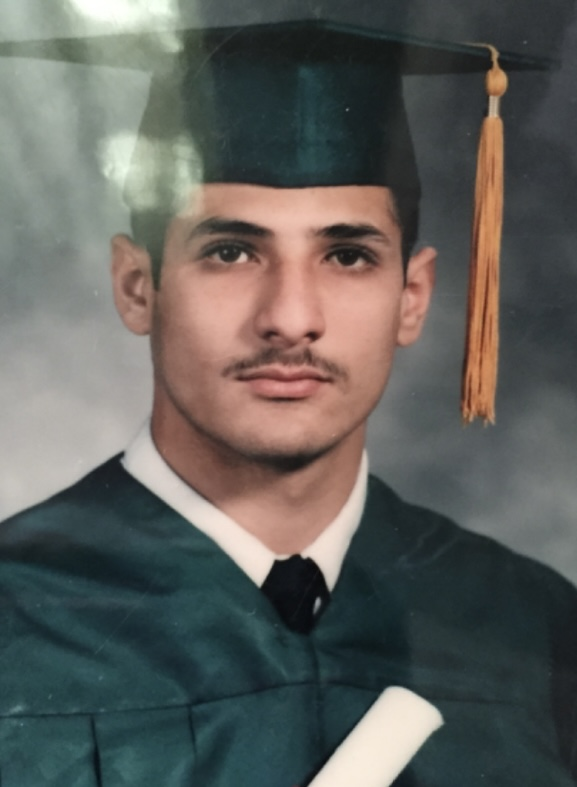
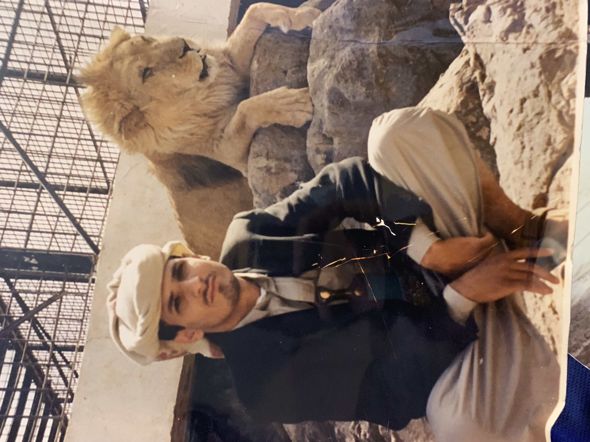
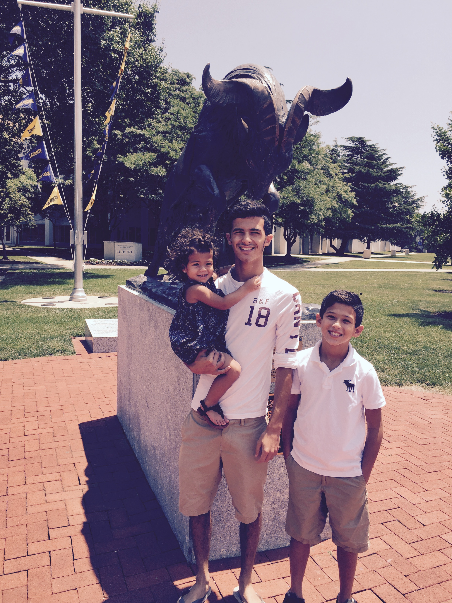

From Service to Leadership My name is Yousef Abdulsalam, and my life journey has been shaped by family, hard work, dedication, and service to others. Throughout my life, I have learned that success is not just about what you accomplish, but also about the people you meet, the challenges you overcome, and the difference you make in the lives of others.War.gov
My Background: Where It All Began
My life journey began in Yemen, a country rich in history, culture, traditions, and strong family values. Coming from Yemen and growing up in Brooklyn, New York, gave me the opportunity to experience two different worlds. Both cultures played an important role in shaping the person I am today.
Growing up in Brooklyn was an experience I will never forget. Brooklyn was full of different cultures, languages, religions, and people from all walks of life. Life wasn’t always easy, but those experiences taught me how to be strong, independent, respectful, and hardworking.
Being raised with Yemeni traditions while adapting to the American lifestyle helped me understand the importance of family, respect, education, and hard work. I learned how to balance both cultures without forgetting where I came from.
Growing Up in Brooklyn
Brooklyn played a major role in my life. Growing up in New York City taught me many lessons that I probably wouldn’t have learned anywhere else. I was surrounded by people from different backgrounds, and that helped me become more open-minded and understand different perspectives.
Living in Brooklyn also taught me that nothing in life comes easy. You have to work hard, stay focused, and sometimes make sacrifices to accomplish your goals. The streets of Brooklyn, the people I met, and the challenges I faced all helped prepare me for the future.
I am proud of my Yemeni roots, but I am also proud to say that Brooklyn helped make me who I am today.




